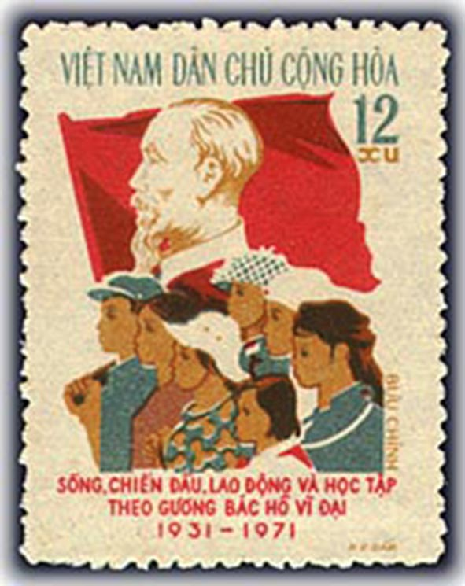
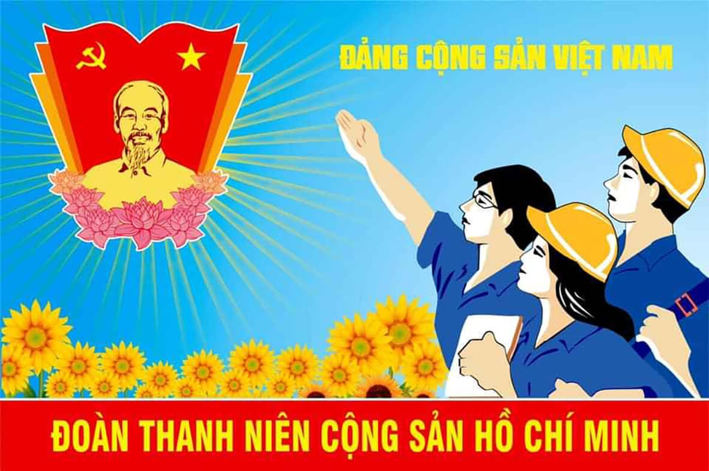
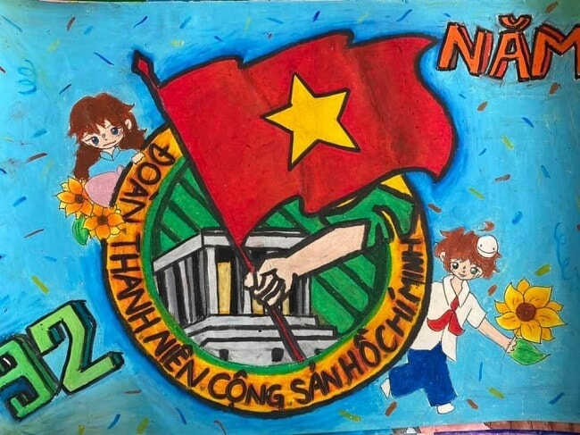
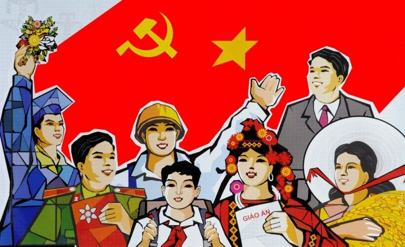

📸 95 năm xây dựng

📖 Nội Dung
Ngày 26-3 năm nay, Đoàn Thanh niên Cộng sản Hồ Chí Minh tròn 95 năm xây dựng, trưởng thành và cống hiến. Nhìn lại chặng đường vẻ vang ấy, chúng ta càng thêm tự hào về truyền thống của các thế hệ thanh niên Việt Nam. Trải qua các thời kỳ đấu tranh giành độc lập dân tộc, bảo vệ Tổ quốc, xây dựng và phát triển đất nước, thanh niên luôn là lực lượng xung kích, đi đầu, không quản ngại khó khăn, gian khổ, sẵn sàng dấn thân vì sự nghiệp cách mạng. Dưới ngọn cờ vẻ vang của Đảng, được Bác Hồ kính yêu và các thế hệ cách mạng dìu dắt, tuổi trẻ nước ta đã viết nên nhiều trang sử đẹp bằng lý tưởng cao cả, tinh thần yêu nước và khát vọng cống hiến.

📚 Mẫu Chuyện
Trong các cuộc kháng chiến, tuổi trẻ là lớp người “quyết tử để Tổ quốc quyết sinh”, có mặt trên chiến hào, tuyến lửa, hậu phương lớn, công trường và trong những phong trào sôi nổi như “Ba sẵn sàng”, “Ba đảm đang”, “Năm xung phong”. Đặc biệt, lực lượng thanh niên xung phong đã trở thành biểu tượng sáng đẹp của chủ nghĩa anh hùng cách mạng, góp phần hết sức quan trọng vào thắng lợi của sự nghiệp giải phóng dân tộc.

🎯 Hoạt Động
- Tình nguyện mùa hè xanh
- Hiến máu nhân đạo
- Văn nghệ - thể thao
- Bảo vệ môi trường

🏆 Truyền Thống
Đoàn Thanh niên Cộng sản Hồ Chí Minh luôn mang trong mình tinh thần yêu nước, đoàn kết và sáng tạo.
